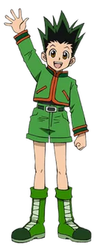
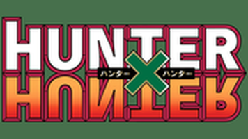
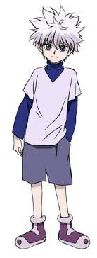

|

|
 Hunter x Hunter ist ein sehr guter Anime der allerdings schon etwas älter ist Der bei seiner Tante lebende zwölfjährige Gon Freeks erfährt vom Hunter Kaito, dass sein Vater Ging Freeks ein Hunter ist und noch lebt, aber nicht gefunden werden möchte. So beschließt Gon ebenfalls Hunter zu werden und seinen Vater zu finden. Bei der Prüfung trifft er auf Leorio, Kurapika und Killua. Hunter x Hunter (ハンター×ハンター, Hantā Hantā) ist ein Manga des japanischen Zeichners Yoshihiro Togashi. Auf dem Manga basiert eine Anime-Fernsehserie, mehrere Anime-OVAs und Radiohörspiele.
© hunter x hunter |
 |